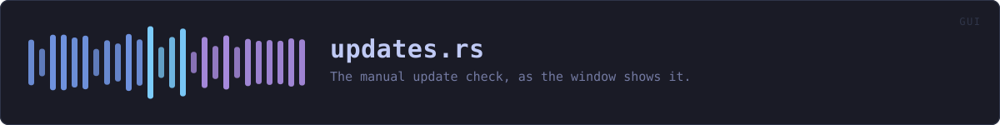

crates/veilvoice-gui/src/updates.rs
veilvoice-gui · 246 lines · read the source here · or on GitHub
The manual update check, as the window shows it.
veilvoice_update does the asking and states what the answer is worth. This is the button, the spinner and the result — and the rule that the button is the only thing that ever starts it.
It runs on a thread, and the window never waits for it
The check runs a subprocess and waits for a network round trip. On a captive portal that is the full ten-second timeout. update() may read, paint and start work; it may never wait for any — locked decision 15, and the reason this application was reported as freezing every couple of seconds once already. So the button spawns a thread, the thread sends one message down a channel, and the window drains that channel once a frame and moves on.
Nothing here is automatic
There is no timer, no check at startup, and no "check again" on a schedule. Updates holds no clock. The only path into veilvoice_update::check is a click, and a test asserts the state a freshly built panel is in.
In plain words
The update check, as a button you press.
VeilVoice never checks on its own and never contacts anything unless you ask. An update check that runs by itself is a message to somebody else's server saying that this copy exists and is running now.
When you do press it, it compares your version against the newest published one and tells you what it found, including that the answer only tells you what a release page says.
WHAT THIS FILE CONTAINS
246 lines defining 5 functions (3 public), 1 type and 0 constants. Everything below is read out of the source, so it cannot disagree with the code.
The types it owns.
struct Updatesline 42 — The panel's state.
What happens when it runs. These are the ways in: public, and nothing else in this file calls them, so they are what an outside caller reaches first.
Updates::drainline 60 — Take the worker's answer if it has one.Updates::sectionline 95 — The whole section, as it appears under "about".
reachesis_busy,start,verdict
WHAT CALLS WHAT
The functions this file defines, and the calls between them. An edge means the callee's name appears, called, inside the caller's body — a syntactic reading, not a type-resolved one.
The same graph as Mermaid source
%%{init: {"theme":"base","themeVariables":{"background":"#1a1b26","primaryColor":"#1f2335","primaryTextColor":"#c0caf5","primaryBorderColor":"#7aa2f7","secondaryColor":"#16161e","tertiaryColor":"#16161e","lineColor":"#737aa2","textColor":"#c0caf5","mainBkg":"#1f2335","nodeBorder":"#7aa2f7","clusterBkg":"#16161e","clusterBorder":"#2f3549","fontFamily":"ui-monospace, SFMono-Regular, Consolas, monospace","fontSize":"14px"}}}%%
flowchart TD
n_is_busy["Updates::is_busy<br/>line 51"]
n_drain(["Updates::drain<br/>line 60"])
n_start["Updates::start<br/>line 78"]
n_section(["Updates::section<br/>line 95"])
n_verdict["Updates::verdict<br/>line 144"]
n_section --> n_is_busy
n_section --> n_start
n_section --> n_verdict
click n_is_busy href "https://github.com/tilas01/veilvoice/blob/main/crates/veilvoice-gui/src/updates.rs#L51" "open the source"
click n_drain href "https://github.com/tilas01/veilvoice/blob/main/crates/veilvoice-gui/src/updates.rs#L60" "open the source"
click n_start href "https://github.com/tilas01/veilvoice/blob/main/crates/veilvoice-gui/src/updates.rs#L78" "open the source"
click n_section href "https://github.com/tilas01/veilvoice/blob/main/crates/veilvoice-gui/src/updates.rs#L95" "open the source"
click n_verdict href "https://github.com/tilas01/veilvoice/blob/main/crates/veilvoice-gui/src/updates.rs#L144" "open the source"
classDef entry fill:#1f2335,stroke:#7aa2f7,color:#c0caf5
class n_drain,n_section entry
classDef api fill:#1f2335,stroke:#7dcfff,color:#c0caf5
class n_is_busy api
classDef helper fill:#1f2335,stroke:#bb9af7,color:#c0caf5
class n_start,n_verdict helperThis site loads no third-party script, so it cannot run Mermaid; the diagram above is the same nodes and edges drawn by the generator instead. GitHub renders the source below directly.
ITEMS
| Item | Line | Documentation |
|---|---|---|
Updates pub struct | 42 | The panel's state. |
Updates::is_busy pub fn | 51 | Whether a check is running, so the app knows to keep repainting. |
Updates::drain pub fn | 60 | Take the worker's answer if it has one. |
Updates::start fn | 78 | Start a check. |
Updates::section pub fn | 95 | The whole section, as it appears under "about". |
Updates::verdict fn | 144 | The answer itself, in the colour it deserves. |